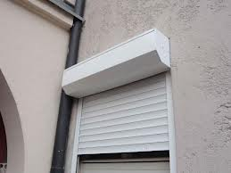

Assistenza, riparazioni e ricambi Costa Del Mar | Costa ... Accedi al portale per ottenere una sostituzione, riparazione o ricambi Costa Del Mar. Invia la tua richiesta di assistenza gratuita in garanzia o a pagamento per occhiali da sole o da vista.
Usa: città dell'illinois approva programma di "riparazioni ... New York, 23 mar 06:33 - (Agenzia Nova) - La città di Evanston, nell'Illinois, ha approvato ieri, 22 marzo, un programma di riparazioni per individui afroamericani, teso a risarcirli dei danni che sarebbero stati loro causati dai trascorsi della segregazione razziale e dalla discriminazione negli Usa. Lo riferisce il quotidiano "Washington Post", evidenziando che Evanston è la prima ...
Genova Camper, Vendita Camper Nuovi e Usati, Accessori e ... È giusto specificare che non si tratta di una “ripicca” contro i clienti maleducati, essi pagheranno esattamente quanto previsto dal tariffario per le riparazioni o le consulenze.
Becchis Cicli – Vendita, noleggio, riparazioni ed ... Quale è il prezzo di un genocidio? Scontro tra Namibia e Germania sulle riparazioni di Francesco Malgaroli Herero in catene . Tra il 1904 e il 1908 i soldati tedeschi massacrarono decine di ...
Bianco Auto | Vendita auto e officina riparazioni Le riparazioni, incluse le parti di ricambio, sono garantite per 90 giorni o per il periodo residuo della garanzia Apple o della copertura del piano AppleCare, a seconda di quale tra i due periodi sia più lungo. Questa garanzia viene offerta per tutti gli interventi di assistenza effettuati da Apple o da un Centro Assistenza Autorizzato Apple ...
Bike Lab – Negozio mtb e servizio riparazioni – Negozio ... Da Bianco Auto trovi veicoli aziendali, usati e km0. Finanziamenti personalizzati a tasso agevolato: da sempre attenta alle esigenze dei nostri clienti e, per venire incontro a tutti coloro che vogliono cambiare vettura, abbiamo preparato per voi un nuovo piano di finanziamento davvero vantaggioso che potrete utilizzare presso la nostra concessionaria per l’acquisto della vostra auto ...
Quale è il prezzo di un genocidio? Scontro tra Namibia e ... Una bici per ogni avventura. Tradizione annuale per la Becchis Cicli è la collaborazione con organizzazioni turistiche straniere per dare a moltissime famiglie aderenti un buon servizio di noleggio biciclette.
Apple, se si è gentili le riparazioni sono omaggio ... Artigianato - Riparazioni Lazio Artigianato - Riparazioni Roma e provincia Artigianato - Riparazioni Roma. Fornisci la tua opinione. Vivastreet. Contattaci Aiuto. Come funziona Opzioni Visibilita' Condizioni generali di utilizzo del servizio Informativa sulla privacy Vivastreet Cookies

Abbonati Menu Cerca Abbonati Abbonati Quotidiano Menu di navigazione Contenuti per gli abbonati Sezioni Commenti Cronaca Cultura Design Economia Esteri Giochi Green&Blue Londra Moda e Beauty Mondo Solidale Motori Podcast Politica RepTv Rubriche Salute Sapori Scienze Scuola Repubblica@Scuola Robinson Serie Tv Spettacoli Sport Tecnologia Vaticano Viaggi Edizioni Locali Roma Milano Bari Bologna Firenze Genova Napoli Palermo Parma Torino Speciali Oncologia Salute Seno Giochi senza barriere Europa, Italia Inserti Affari&Finanza D Il Venerdi L'Espresso Robinson Servizi Annunci Aste Giochi e Scommesse Guida Tv Ilmiolibro Lavoro Meteo Necrologie Oroscopo Repubblica + Repubblica + Trovacinema Consigli.it Dizionari Ricette Newsletter Redazione Scriveteci 20 Aprile 2021 - Aggiornato alle 20.23
Esteri
Esteri
Quale è il prezzo di un genocidio? Scontro tra Namibia e Germania sulle riparazioni
di Francesco Malgaroli Herero in catene Tra il 1904 e il 1908 i soldati tedeschi massacrarono decine di migliaia di persone Herero e Nama, una colpa che Berlino ha già riconosciuto. Aperto il capitolo delle compensazioni 12 Aprile 2021 2 minuti di lettura
Molti in Africa hanno gli occhi fissi sulla Namibia. Vogliono vedere come andrà a finire lo scontro per gli indennizzi dalla Germania: tra il 1904 e il 1908 - in risposta a rivolte contro i colonizzatori - soldati tedeschi massacrarono decine di migliaia di persone dei popoli Herero e Nama.
Berlino, il museo di von Humboldt fa litigare i tedeschi
dalla nostra corrispondente Tonia Mastrobuoni 17 Dicembre 2020
Leggi anche
Sudafrica, a fuoco la Table Mountain: Città del Capo assediata dalle fiamme
Namibia, 170 elefanti all'asta. Il governo: "Sono troppi e causano incidenti"
Germania, Soeder si ritira: è Laschet lo sfidante Cdu/Csu alla cancelleria per il dopo Merkel
Superlega, le sanzioni Uefa: "I ribelli esclusi dalle Coppe"
Superlega, Draghi: "Difendiamo il merito nello sport". Il piano per la tregua
Il calcio di Perez, Agnelli, Glazer: la rivoluzione dopo le vittorie
Grillo e la difesa del figlio, chat 5S bollenti: così ci massacrano, Letta: “Quelle frasi inaccettabili”
Blog
My tube di Enrico Franceschini
Perché nella NBA non vincono sempre gli stessi
Mediterraneo di Alberto Stabile
Vladimir (Putin) Il Terribile
Vedi tutti
Il Network
Edizioni locali
Bari Bologna Firenze Genova Milano Napoli Palermo Parma Roma Torino
Supplementi Repubblica
Archivio Diario Archivio La Domenica Affari & Finanza D - la Repubblica Il Venerdì
Gedi News Network
La Stampa Il Secolo XIX Gazzetta di Mantova Corriere delle Alpi Il mattino di Padova Il Piccolo La Nuova Venezia La Provincia Pavese La Sentinella del Canavese La Tribuna di Treviso Messaggero Veneto
Periodici
L'Espresso Le Scienze Limes Micromega National Geographic RClub
Radio
DeeJay Capital m2o
Iniziative Editoriali
Tutte le iniziative Servizio Clienti Servizio Arretrati Guide di Repubblica
Servizi, tv e consumi
Annunci Mymovies Ilmiolibro Necrologie GuidaTV Miojob Enti e Tribunali Meteo Traffico in diretta tvzap Dizionario italiano Dizionario inglese/italiano Consigli.it Ricette
Partnership
Huffington Post National Geographic Le Scienze Business Insider Mashable Italia
RSS
Homepage Cronaca Politica Tecnologia Ambiente Esteri Calcio Sport Motori Scienze Gallerie Spettacoli Scuola e Giovani Mondo Solidale Economia&Finanza Fai di Repubblica la tua homepage Mappa del sito Redazione Scriveteci Per inviare foto e video Servizio Clienti Pubblicità Cookie Policy Privacy Codice Etico e Best Practices Divisione Stampa Nazionale - GEDI Gruppo Editoriale S.p.A. - P.Iva 00906801006 - ISSN 2499-0817